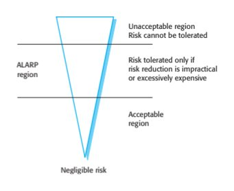
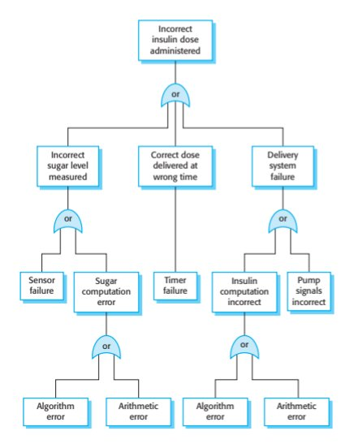
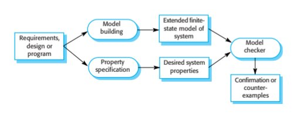
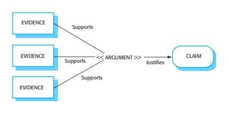
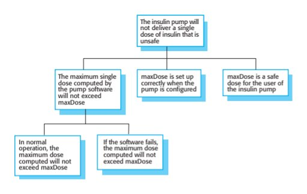
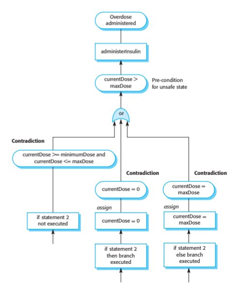

Chapter 12 · Safety Engineering
Source review
The original source text, examples, tables and caveats remain available. Source slide numbers and textbook PDF pages are different references. Historical assertions stay attributed to this edition; this page is not a current legal, medical, regulatory or product guide. Classroom activities are labelled separately.
Required selections
- Fault-tree reasoning and reduction: original slides 25–30
- Static analysis: original slides 50–53
Apply one named source concept to the chapter artifact and explain its effect. Finish any uncompleted core topic here; material does not become optional merely because it is reviewed after class. Assignment dates and marks remain in Blackboard.
Original source-slide ledger
Slide 1 · Chapter 12 – Safety Engineering
Slide 2 · Topics covered
Topics covered Safety-critical systems Safety requirements Safety engineering processes Safety cases
Slide 3 · Safety
Safety Safety is a property of a system that reflects the system’s ability to operate, normally or abnormally, without danger of causing human injury or death and without damage to the system’s environment. It is important to consider software safety as most devices whose failure is critical now incorporate software-based control systems.
Slide 4 · Software in safety-critical systems
Software in safety-critical systems The system may be software-controlled so that the decisions made by the software and subsequent actions are safety-critical. Therefore, the software behaviour is directly related to the overall safety of the system. Software is extensively used for checking and monitoring other safety-critical components in a system. For example, all aircraft engine components are monitored by software looking for early indications of component failure. This software is safety-critical because, if it fails, other components may fail and cause an accident.
Slide 5 · Safety and reliability
Safety and reliability Safety and reliability are related but distinct In general, reliability and availability are necessary but not sufficient conditions for system safety Reliability is concerned with conformance to a given specification and delivery of service Safety is concerned with ensuring system cannot cause damage irrespective of whether or not it conforms to its specification. System reliability is essential for safety but is not enough Reliable systems can be unsafe
Slide 6 · Unsafe reliable systems
Unsafe reliable systems There may be dormant faults in a system that are undetected for many years and only rarely arise. Specification errors If the system specification is incorrect then the system can behave as specified but still cause an accident. Hardware failures generating spurious inputs Hard to anticipate in the specification. Context-sensitive commands i.e. issuing the right command at the wrong time Often the result of operator error.
Slide 7 · Safety-critical systems
Safety-critical systems
Slide 8 · Safety critical systems
Safety critical systems Systems where it is essential that system operation is always safe i.e. the system should never cause damage to people or the system’s environment Examples Control and monitoring systems in aircraft Process control systems in chemical manufacture Automobile control systems such as braking and engine management systems
Slide 9 · Safety criticality
Safety criticality Primary safety-critical systems Embedded software systems whose failure can cause the associated hardware to fail and directly threaten people. Example is the insulin pump control system. Secondary safety-critical systems Systems whose failure results in faults in other (socio-technical) systems, which can then have safety consequences. For example, the Mentcare system is safety-critical as failure may lead to inappropriate treatment being prescribed. Infrastructure control systems are also secondary safety-critical systems.
Slide 10 · Hazards
Hazards Situations or events that can lead to an accident Stuck valve in reactor control system Incorrect computation by software in navigation system Failure to detect possible allergy in medication prescribing system Hazards do not inevitably result in accidents – accident prevention actions can be taken.
Slide 11 · Safety achievement
Safety achievement Hazard avoidance The system is designed so that some classes of hazard simply cannot arise. Hazard detection and removal The system is designed so that hazards are detected and removed before they result in an accident. Damage limitation The system includes protection features that minimise the damage that may result from an accident.
Slide 12 · Safety terminology
Safety terminology
Slide 13 · Normal accidents
Normal accidents Accidents in complex systems rarely have a single cause as these systems are designed to be resilient to a single point of failure Designing systems so that a single point of failure does not cause an accident is a fundamental principle of safe systems design. Almost all accidents are a result of combinations of malfunctions rather than single failures. It is probably the case that anticipating all problem combinations, especially, in software controlled systems is impossible so achieving complete safety is impossible. Accidents are inevitable.
Slide 14 · Software safety benefits
Software safety benefits Although software failures can be safety-critical, the use of software control systems contributes to increased system safety Software monitoring and control allows a wider range of conditions to be monitored and controlled than is possible using electro-mechanical safety systems. Software control allows safety strategies to be adopted that reduce the amount of time people spend in hazardous environments. Software can detect and correct safety-critical operator errors.
Slide 15 · Safety requirements
Safety requirements
Slide 16 · Safety specification
Safety specification The goal of safety requirements engineering is to identify protection requirements that ensure that system failures do not cause injury or death or environmental damage. Safety requirements may be ‘shall not’ requirements i.e. they define situations and events that should never occur. Functional safety requirements define: Checking and recovery features that should be included in a system Features that provide protection against system failures and external attacks
Slide 17 · Hazard-driven analysis
Hazard-driven analysis Hazard identification Hazard assessment Hazard analysis Safety requirements specification
Slide 18 · Hazard identification
Hazard identification Identify the hazards that may threaten the system. Hazard identification may be based on different types of hazard: Physical hazards Electrical hazards Biological hazards Service failure hazards Etc.
Slide 19 · Insulin pump risks
Insulin pump risks Insulin overdose (service failure). Insulin underdose (service failure). Power failure due to exhausted battery (electrical). Electrical interference with other medical equipment (electrical). Poor sensor and actuator contact (physical). Parts of machine break off in body (physical). Infection caused by introduction of machine (biological). Allergic reaction to materials or insulin (biological).
Slide 20 · Hazard assessment
Hazard assessment The process is concerned with understanding the likelihood that a risk will arise and the potential consequences if an accident or incident should occur. Risks may be categorised as: Intolerable. Must never arise or result in an accident As low as reasonably practical(ALARP). Must minimise the possibility of risk given cost and schedule constraints Acceptable. The consequences of the risk are acceptable and no extra costs should be incurred to reduce hazard probability
Slide 21 · The risk triangle
The risk triangle
Slide 22 · Social acceptability of risk
Social acceptability of risk The acceptability of a risk is determined by human, social and political considerations. In most societies, the boundaries between the regions are pushed upwards with time i.e. society is less willing to accept risk For example, the costs of cleaning up pollution may be less than the costs of preventing it but this may not be socially acceptable. Risk assessment is subjective Risks are identified as probable, unlikely, etc. This depends on who is making the assessment.
Slide 23 · Hazard assessment
Hazard assessment Estimate the risk probability and the risk severity. It is not normally possible to do this precisely so relative values are used such as ‘unlikely’, ‘rare’, ‘very high’, etc. The aim must be to exclude risks that are likely to arise or that have high severity.
Slide 24 · Risk classification for the insulin pump
Risk classification for the insulin pump
Slide 25 · Hazard analysis
Hazard analysis Concerned with discovering the root causes of risks in a particular system. Techniques have been mostly derived from safety-critical systems and can be Inductive, bottom-up techniques. Start with a proposed system failure and assess the hazards that could arise from that failure; Deductive, top-down techniques. Start with a hazard and deduce what the causes of this could be.
Slide 26 · Fault-tree analysis
Fault-tree analysis A deductive top-down technique. Put the risk or hazard at the root of the tree and identify the system states that could lead to that hazard. Where appropriate, link these with ‘and’ or ‘or’ conditions. A goal should be to minimise the number of single causes of system failure.
Slide 27 · An example of a software fault tree
An example of a software fault tree
Slide 28 · Fault tree analysis
Fault tree analysis Three possible conditions that can lead to delivery of incorrect dose of insulin Incorrect measurement of blood sugar level Failure of delivery system Dose delivered at wrong time By analysis of the fault tree, root causes of these hazards related to software are: Algorithm error Arithmetic error
Slide 29 · Risk reduction
Risk reduction The aim of this process is to identify dependability requirements that specify how the risks should be managed and ensure that accidents/incidents do not arise. Risk reduction strategies Hazard avoidance; Hazard detection and removal; Damage limitation.
Slide 30 · Strategy use
Strategy use Normally, in critical systems, a mix of risk reduction strategies are used. In a chemical plant control system, the system will include sensors to detect and correct excess pressure in the reactor. However, it will also include an independent protection system that opens a relief valve if dangerously high pressure is detected.
Slide 31 · Insulin pump - software risks
Insulin pump - software risks Arithmetic error A computation causes the value of a variable to overflow or underflow; Maybe include an exception handler for each type of arithmetic error. Algorithmic error Compare dose to be delivered with previous dose or safe maximum doses. Reduce dose if too high.
Slide 32 · Examples of safety requirements
Examples of safety requirements SR1: The system shall not deliver a single dose of insulin that is greater than a specified maximum dose for a system user. SR2: The system shall not deliver a daily cumulative dose of insulin that is greater than a specified maximum daily dose for a system user. SR3: The system shall include a hardware diagnostic facility that shall be executed at least four times per hour. SR4: The system shall include an exception handler for all of the exceptions that are identified in Table 3. SR5: The audible alarm shall be sounded when any hardware or software anomaly is discovered and a diagnostic message, as defined in Table 4, shall be displayed. SR6: In the event of an alarm, insulin delivery shall be suspended until the user has reset the system and cleared the alarm.
Slide 33 · Safety engineering processes
Safety engineering processes
Slide 34 · Safety engineering processes
Safety engineering processes Safety engineering processes are based on reliability engineering processes Plan-based approach with reviews and checks at each stage in the process General goal of fault avoidance and fault detection Must also include safety reviews and explicit identification and tracking of hazards
Slide 35 · Regulation
Regulation Regulators may require evidence that safety engineering processes have been used in system development For example: The specification of the system that has been developed and records of the checks made on that specification. Evidence of the verification and validation processes that have been carried out and the results of the system verification and validation. Evidence that the organizations developing the system have defined and dependable software processes that include safety assurance reviews. There must also be records that show that these processes have been properly enacted.
Slide 36 · Agile methods and safety
Agile methods and safety Agile methods are not usually used for safety-critical systems engineering Extensive process and product documentation is needed for system regulation. Contradicts the focus in agile methods on the software itself. A detailed safety analysis of a complete system specification is important. Contradicts the interleaved development of a system specification and program. Some agile techniques such as test-driven development may be used
Slide 37 · Safety assurance processes
Safety assurance processes Process assurance involves defining a dependable process and ensuring that this process is followed during the system development. Process assurance focuses on: Do we have the right processes? Are the processes appropriate for the level of dependability required. Should include requirements management, change management, reviews and inspections, etc. Are we doing the processes right? Have these processes been followed by the development team. Process assurance generates documentation Agile processes therefore are rarely used for critical systems.
Slide 38 · Processes for safety assurance
Processes for safety assurance Process assurance is important for safety-critical systems development: Accidents are rare events so testing may not find all problems; Safety requirements are sometimes ‘shall not’ requirements so cannot be demonstrated through testing. Safety assurance activities may be included in the software process that record the analyses that have been carried out and the people responsible for these. Personal responsibility is important as system failures may lead to subsequent legal actions.
Slide 39 · Safety related process activities
Safety related process activities Creation of a hazard logging and monitoring system. Appointment of project safety engineers who have explicit responsibility for system safety. Extensive use of safety reviews. Creation of a safety certification system where the safety of critical components is formally certified. Detailed configuration management (see Chapter 25).
Slide 40 · Hazard analysis
Hazard analysis Hazard analysis involves identifying hazards and their root causes. There should be clear traceability from identified hazards through their analysis to the actions taken during the process to ensure that these hazards have been covered. A hazard log may be used to track hazards throughout the process.
Slide 41 · A simplified hazard log entry
A simplified hazard log entry
Slide 42 · Hazard log (2)
Hazard log (2)
Slide 43 · Safety reviews
Safety reviews Driven by the hazard register. For each identified hazrd, the review team should assess the system and judge whether or not the system can cope with that hazard in a safe way.
Slide 44 · Formal verification
Formal verification Formal methods can be used when a mathematical specification of the system is produced. They are the ultimate static verification technique that may be used at different stages in the development process: A formal specification may be developed and mathematically analyzed for consistency. This helps discover specification errors and omissions. Formal arguments that a program conforms to its mathematical specification may be developed. This is effective in discovering programming and design errors.
Slide 45 · Arguments for formal methods
Arguments for formal methods Producing a mathematical specification requires a detailed analysis of the requirements and this is likely to uncover errors. Concurrent systems can be analysed to discover race conditions that might lead to deadlock. Testing for such problems is very difficult. They can detect implementation errors before testing when the program is analyzed alongside the specification.
Slide 46 · Arguments against formal methods
Arguments against formal methods Require specialized notations that cannot be understood by domain experts. Very expensive to develop a specification and even more expensive to show that a program meets that specification. Proofs may contain errors. It may be possible to reach the same level of confidence in a program more cheaply using other V & V techniques.
Slide 47 · Formal methods cannot guarantee safety
Formal methods cannot guarantee safety The specification may not reflect the real requirements of system users. Users rarely understand formal notations so they cannot directly read the formal specification to find errors and omissions. The proof may contain errors. Program proofs are large and complex, so, like large and complex programs, they usually contain errors. The proof may make incorrect assumptions about the way that the system is used. If the system is not used as anticipated, then the system’s behavior lies outside the scope of the proof.
Slide 48 · Model checking
Model checking Involves creating an extended finite state model of a system and, using a specialized system (a model checker), checking that model for errors. The model checker explores all possible paths through the model and checks that a user-specified property is valid for each path. Model checking is particularly valuable for verifying concurrent systems, which are hard to test. Although model checking is computationally very expensive, it is now practical to use it in the verification of small to medium sized critical systems.
Slide 49 · Model checking
Model checking
Slide 50 · Static program analysis
Static program analysis Static analysers are software tools for source text processing. They parse the program text and try to discover potentially erroneous conditions and bring these to the attention of the V & V team. They are very effective as an aid to inspections - they are a supplement to but not a replacement for inspections.
Slide 51 · Automated static analysis checks
Automated static analysis checks
Slide 52 · Levels of static analysis
Levels of static analysis Characteristic error checking The static analyzer can check for patterns in the code that are characteristic of errors made by programmers using a particular language. User-defined error checking Users of a programming language define error patterns, thus extending the types of error that can be detected. This allows specific rules that apply to a program to be checked. Assertion checking Developers include formal assertions in their program and relationships that must hold. The static analyzer symbolically executes the code and highlights potential problems.
Slide 53 · Use of static analysis
Use of static analysis Particularly valuable when a language such as C is used which has weak typing and hence many errors are undetected by the compiler. Particularly valuable for security checking – the static analyzer can discover areas of vulnerability such as buffer overflows or unchecked inputs. Static analysis is now routinely used in the development of many safety and security critical systems.
Slide 54 · Safety cases
Safety cases
Slide 55 · Safety and dependability cases
Safety and dependability cases Safety and dependability cases are structured documents that set out detailed arguments and evidence that a required level of safety or dependability has been achieved. They are normally required by regulators before a system can be certified for operational use. The regulator’s responsibility is to check that a system is as safe or dependable as is practical. Regulators and developers work together and negotiate what needs to be included in a system safety/dependability case.
Slide 56 · The system safety case
The system safety case A safety case is: A documented body of evidence that provides a convincing and valid argument that a system is adequately safe for a given application in a given environment. Arguments in a safety case can be based on formal proof, design rationale, safety proofs, etc. Process factors may also be included. A software safety case is usually part of a wider system safety case that takes hardware and operational issues into account.
Slide 57 · The contents of a software safety case
The contents of a software safety case
Slide 58 · Chapter 12 Safety Engineering
Slide 59 · Structured arguments
Structured arguments Safety cases should be based around structured arguments that present evidence to justify the assertions made in these arguments. The argument justifies why a claim about system safety and security is justified by the available evidence.
Slide 60 · Structured arguments
Structured arguments
Slide 61 · Insulin pump safety argument
Insulin pump safety argument Arguments are based on claims and evidence. Insulin pump safety: Claim: The maximum single dose of insulin to be delivered (CurrentDose) will not exceed MaxDose. Evidence: Safety argument for insulin pump (discussed later) Evidence: Test data for insulin pump. The value of currentDose was correctly computed in 400 tests Evidence: Static analysis report for insulin pump software revealed no anomalies that affected the value of CurrentDose Argument: The evidence presented demonstrates that the maximum dose of insulin that can be computed = MaxDose.
Slide 62 · Structured safety arguments
Structured safety arguments Structured arguments that demonstrate that a system meets its safety obligations. It is not necessary to demonstrate that the program works as intended; the aim is simply to demonstrate safety. Generally based on a claim hierarchy. You start at the leaves of the hierarchy and demonstrate safety. This implies the higher-level claims are true.
Slide 63 · A safety claim hierarchy for the insulin pump
A safety claim hierarchy for the insulin pump
Slide 64 · Software safety arguments
Software safety arguments Safety arguments are intended to show that the system cannot reach in unsafe state. These are weaker than correctness arguments which must show that the system code conforms to its specification. They are generally based on proof by contradiction Assume that an unsafe state can be reached; Show that this is contradicted by the program code. A graphical model of the safety argument may be developed.
Slide 65 · Construction of a safety argument
Construction of a safety argument Establish the safe exit conditions for a component or a program. Starting from the END of the code, work backwards until you have identified all paths that lead to the exit of the code. Assume that the exit condition is false. Show that, for each path leading to the exit that the assignments made in that path contradict the assumption of an unsafe exit from the component.
Slide 66 · Insulin dose computation with safety checks
Insulin dose computation with safety checks
-- The insulin dose to be delivered is a function of blood sugar level,
-- the previous dose delivered and the time of delivery of the previous dose
currentDose = computeInsulin () ;
// Safety check—adjust currentDose if necessary.
// if statement 1
if (previousDose == 0)
{
if (currentDose > maxDose/2)
currentDose = maxDose/2 ;
}
else
if (currentDose > (previousDose * 2) )
currentDose = previousDose * 2 ;
// if statement 2
if ( currentDose < minimumDose )
currentDose = 0 ;
else if ( currentDose > maxDose )
currentDose = maxDose ;
administerInsulin (currentDose) ;Slide 67 · Informal safety argument based on demonstrating contradictions
Informal safety argument based on demonstrating contradictions
Slide 68 · Program paths
Program paths Neither branch of if-statement 2 is executed Can only happen if CurrentDose is >= minimumDose and <= maxDose. then branch of if-statement 2 is executed currentDose = 0. else branch of if-statement 2 is executed currentDose = maxDose. In all cases, the post conditions contradict the unsafe condition that the dose administered is greater than maxDose.
Slide 69 · Key points
Key points Safety-critical systems are systems whose failure can lead to human injury or death. A hazard-driven approach is used to understand the safety requirements for safety-critical systems. You identify potential hazards and decompose these (using methods such as fault tree analysis) to discover their root causes. You then specify requirements to avoid or recover from these problems. It is important to have a well-defined, certified process for safety-critical systems development. This should include the identification and monitoring of potential hazards.
Slide 70 · Key points
Key points Static analysis is an approach to V & V that examines the source code of a system, looking for errors and anomalies. It allows all parts of a program to be checked, not just those parts that are exercised by system tests. Model checking is a formal approach to static analysis that exhaustively checks all states in a system for potential errors. Safety and dependability cases collect the evidence that demonstrates a system is safe and dependable. Safety cases are required when an external regulator must certify the system before it is used.
Preserved original source illustrations
Select a figure to inspect it at its original size. The original PDF/PPTX retains its full layout and vector diagrams.






Supplied textbook chapter · complete text
The PDF remains authoritative for mathematical layout, figures and tables. Line wrapping and extraction artifacts may occur below; no textbook statement is replaced by a contemporary claim.
PDF page 1 · printed page 339
12
Safety engineering
Objectives
The objective of this chapter is to explain techniques that are used to
ensure safety when developing critical systems. When you have read this
chapter, you will:
■ understand what is meant by a safety-critical system and why safety
has to be considered separately from reliability in critical systems
engineering;
■ understand how an analysis of hazards can be used to derive safety
requirements;
■ know about processes and tools that are used for software safety
assurance;
■ understand the notion of a safety case that is used to justify the safety
of a system to regulators, and how formal arguments may be used in
safety cases.
Contents
12.1 Safety-critical systems
12.2 Safety requirements
12.3 Safety engineering processes
12.4 Safety casesPDF page 2 · printed page 340
340 Chapter 12 ■ Safety engineering
In Section 11.2, I briefly described an air accident at Warsaw Airport where an
Airbus crashed on landing. Two people were killed and 54 were injured. The subse-
quent inquiry showed that a major contributory cause of the accident was a failure of
the control software that reduced the efficiency of the aircraft’s braking system. This
is one of the, thankfully rare, examples of where the behavior of a software system
has led to death or injury. It illustrates that software is now a central component in
many systems that are critical to preserving and maintaining life. These are safety-
critical software systems, and a range of specialized methods and techniques have
been developed for safety-critical software engineering.
As I discussed in Chapter 10, safety is one of the principal dependability proper-
ties. A system can be considered to be safe if it operates without catastrophic failure,
that is, failure that causes or may cause death or injury to people. Systems whose
failure may lead to environmental damage may also be safety-critical as environmen-
tal damage (such as a chemical leak) can lead to subsequent human injury or death.
Software in safety-critical systems has a dual role to play in achieving safety:
1. The system may be software-controlled so that the decisions made by the soft-
ware and subsequent actions are safety-critical. Therefore, the software behav-
ior is directly related to the overall safety of the system.
2. Software is extensively used for checking and monitoring other safety-critical com-
ponents in a system. For example, all aircraft engine components are monitored by
software looking for early indications of component failure. This software is safety-
critical because, if it fails, other components may fail and cause an accident.
Safety in software systems is achieved by developing an understanding of the situ-
ations that might lead to safety-related failures. The software is engineered so that
such failures do not occur. You might therefore think that if a safety-critical system is
reliable and behaves as specified, it will therefore be safe. Unfortunately, it isn’t quite
as simple as that. System reliability is necessary for safety achievement, but it isn’t
enough. Reliable systems can be unsafe and vice versa. The Warsaw Airport accident
was an example of such a situation, which I’ll discuss in more detail in Section 12.2.
Software systems that are reliable may not be safe for four reasons:
1. We can never be 100% certain that a software system is fault-free and
fault-tolerant. Undetected faults can be dormant for a long time, and software
failures can occur after many years of reliable operation.
2. The specification may be incomplete in that it does not describe the required
behavior of the system in some critical situations. A high percentage of system
malfunctions are the result of specification rather than design errors. In a study
of errors in embedded systems, Lutz (Lutz 1993) concludes that “difficulties
with requirements are the key root cause of the safety-related software errors,
which have persisted until integration and system testing.†”
†Lutz, R R. 1993. “Analysing Software Requirements Errors in Safety-Critical Embedded Systems.” In
RE’93, 126–133. San Diego CA: IEEE. doi:0.1109/ISRE.1993.324825.PDF page 3 · printed page 341
12.1 ■ Safety-critical systems 341
More recent work by Veras et al. (Veras et al. 2010) in space systems confirms
that requirements errors are still a major problem for embedded systems.
3. Hardware malfunctions may cause sensors and actuators to behave in an unpre-
dictable way. When components are close to physical failure, they may behave
erratically and generate signals that are outside the ranges that can be handled by
the software. The software may then either fail or wrongly interpret these signals.
4. The system operators may generate inputs that are not individually incorrect but
that, in some situations, can lead to a system malfunction. An anecdotal exam-
ple of this occurred when an aircraft undercarriage collapsed while the aircraft
was on the ground. Apparently, a technician pressed a button that instructed the
utility management software to raise the undercarriage. The software carried out
the mechanic’s instruction perfectly. However, the system should have disal-
lowed the command unless the plane was in the air.
Therefore, safety has to be considered as well as reliability when developing
safety-critical systems. The reliability engineering techniques that I introduced in
Chapter 11 are obviously applicable for safety-critical systems engineering. I there-
fore do not discuss system architectures and dependable programming here but
instead focus on techniques for improving and assuring system safety.
12.1 Safety-critical systems
Safety-critical systems are systems in which it is essential that system operation is
always safe. That is, the system should never damage people or the system’s environ-
ment, irrespective of whether or not the system conforms to its specification. Examples
of safety-critical systems include control and monitoring systems in aircraft, process
control systems in chemical and pharmaceutical plants, and automobile control systems.
Safety-critical software falls into two classes:
1. Primary safety-critical software This is software that is embedded as a control-
ler in a system. Malfunctioning of such software can cause a hardware malfunc-
tion, which results in human injury or environmental damage. The insulin pump
software that I introduced in Chapter 1 is an example of a primary safety-critical
system. System failure may lead to user injury.
The insulin pump system is a simple system, but software control is also used in
very complex safety-critical systems. Software rather than hardware control is
essential because of the need to manage large numbers of sensors and actuators,
which have complex control laws. For example, advanced, aerodynamically
unstable, military aircraft require continual software-controlled adjustment of
their flight surfaces to ensure that they do not crash.
2. Secondary safety-critical software This is software that can indirectly result in an
injury. An example of such software is a computer-aided engineering design systemPDF page 4 · printed page 342
342 Chapter 12 ■ Safety engineering
whose malfunctioning might result in a design fault in the object being designed.
This fault may cause injury to people if the designed system malfunctions. Another
example of a secondary safety-critical system is the Mentcare system for mental
health patient management. Failure of this system, whereby an unstable patient may
not be treated properly, could lead to that patient injuring himself or others.
Some control systems, such as those controlling critical national infrastructure (elec-
tricity supply, telecommunications, sewage treatment, etc.), are secondary safety-
critical systems. Failure of these systems is unlikely to have immediate human
consequences. However, a prolonged outage of the controlled systems could lead to
injury and death. For example, failure of a sewage treatment system could lead to a
higher level of infectious disease as raw sewage is released into the environment.
I explained in Chapter 11 how software and system availability and reliability are
achieved through fault avoidance, fault detection and removal, and fault tolerance.
Safety-critical systems development uses these approaches and augments them with
hazard-driven techniques that consider the potential system accidents that may occur:
1. Hazard avoidance The system is designed so that hazards are avoided. For
example, a paper-cutting system that requires an operator to use two hands to
press separate buttons simultaneously avoids the hazard of the operator’s hands
being in the blade’s pathway.
2. Hazard detection and removal The system is designed so that hazards are
detected and removed before they result in an accident. For example, a chemical
plant system may detect excessive pressure and open a relief valve to reduce
pressure before an explosion occurs.
3. Damage limitation The system may include protection features that minimize
the damage that may result from an accident. For example, an aircraft engine
normally includes automatic fire extinguishers. If there is an engine fire, it can
often be controlled before it poses a threat to the aircraft.
A hazard is a system state that could lead to an accident. Using the above example
of the paper-cutting system, a hazard arises when the operator’s hand is in a position
where the cutting blade could injure it. Hazards are not accidents—we often get our-
selves into hazardous situations and get out of them without any problems. However,
accidents are always preceded by hazards, so reducing hazards reduces accidents.
A hazard is one example of the specialized vocabulary that is used in safety-critical sys-
tems engineering. I explain other terminology used in safety-critical systems in Figure 12.1.
We are now actually pretty good at building systems that can cope with one thing
going wrong. We can design mechanisms into the system that can detect and recover
from single problems. However, when several things go wrong at the same time, acci-
dents are more likely. As systems become more and more complex, we don’t understand
the relationships between the different parts of the system. Consequently, we cannot
predict the consequences of a combination of unexpected system events or failures.
In an analysis of serious accidents, Perrow (Perrow 1984) suggested that almost
all of the accidents were due to a combination of failures in different parts of a system.PDF page 5 · printed page 343
12.1 ■ Safety-critical systems 343
Term Definition
Accident (or mishap) An unplanned event or sequence of events that results in human death or injury,
damage to property or to the environment. An overdose of insulin is an example of
an accident.
Damage A measure of the loss resulting from a mishap. Damage can range from many
people being killed as a result of an accident to minor injury or property damage.
Damage resulting from an overdose of insulin could lead to serious injury or the
death of the user of the insulin pump.
Hazard A condition with the potential for causing or contributing to an accident. A failure of
the sensor that measures blood glucose is an example of a hazard.
Hazard probability The probability of the events occurring which create a hazard. Probability values
tend to be arbitrary but range from “probable” (say 1/100 chance of a hazard
occurring) to “implausible” (no conceivable situations are likely in which the hazard
could occur). The probability of a sensor failure in the insulin pump that
overestimates the user’s blood sugar level is low.
Hazard severity An assessment of the worst possible damage that could result from a particular
hazard. Hazard severity can range from catastrophic, where many people are killed,
to minor, where only minor damage results. When an individual death is a
possibility, a reasonable assessment of hazard severity is “very high.”
Risk A measure of the probability that the system will cause an accident. The risk is assessed
by considering the hazard probability, the hazard severity, and the probability that the
hazard will lead to an accident. The risk of an insulin overdose is medium to low.
Figure 12.1 Safety
Unanticipated combinations of subsystem failures led to interactions that resulted interminology
overall system failure. For example, failure of an air conditioning system may lead
to overheating. Once hardware gets hot, its behavior becomes unpredictable, so
overheating may lead to the system hardware generating incorrect signals. These
wrong signals may then cause the software to react incorrectly.
Perrow made the point that, in complex systems, it is impossible to anticipate all
possible combinations of failures. He therefore coined the phrase “normal acci-
dents,” with the implication that accidents have to be considered as inevitable when
we build complex safety-critical systems.
To reduce complexity, we could use simple hardware controllers rather than soft-
ware control. However, software-controlled systems can monitor a wider range of
conditions than simpler electromechanical systems. They can be adapted relatively
easily. They use computer hardware, which has high inherent reliability and which is
physically small and lightweight.
Software-controlled systems can provide sophisticated safety interlocks. They
can support control strategies that reduce the amount of time people need to spend in
hazardous environments. Although software control may introduce more ways in
which a system can go wrong, it also allows better monitoring and protection.
Therefore, software control can contribute to improvements in system safety.
It is important to maintain a sense of proportion about safety-critical systems. Critical
software systems operate without problems most of the time. Relatively few people
worldwide have been killed or injured because of faulty software. Perrow is right in say-PDF page 6 · printed page 344
344 Chapter 12 ■ Safety engineering
Risk-based requirements specification
Risk-based specification is an approach that has been widely used by safety and security-critical systems developers.
It focuses on those events that could cause the most damage or that are likely to occur frequently. Events that have only
minor consequences or that are extremely rare may be ignored. The risk-based specification process involves under-
standing the risks faced by the system, discovering their root causes, and generating requirements to manage these risks.
http://software-engineering-book.com/web/risk-based-specification/
ing that accidents will always be a possibility. It is impossible to make a system 100%
safe, and society has to decide whether or not the consequences of an occasional
accident are worth the benefits that come from the use of advanced technologies.
12.2 Safety requirements
In the introduction to this chapter, I described an air accident at Warsaw Airport
where the braking system on an Airbus failed. The inquiry into this accident showed
that the braking system software had operated according to its specification. There
were no errors in the program. However, the software specification was incomplete
and had not taken into account a rare situation, which arose in this case. The soft-
ware worked, but the system failed.
This episode illustrates that system safety does not just depend on good engineer-
ing. It requires attention to detail when the system requirements are derived and the
inclusion of special software requirements that are geared to ensuring the safety of a
system. Safety requirements are functional requirements, which define checking and
recovery facilities that should be included in the system and features that provide
protection against system failures and external attacks.
The starting point for generating functional safety requirements is usually domain
knowledge, safety standards, and regulations. These lead to high-level requirements
that are perhaps best described as “shall not” requirements. By contrast with normal
functional requirements that define what the system shall do, “shall not” requirements
define system behavior that is unacceptable. Examples of “shall not” requirements are:
“The system shall not allow reverse thrust mode to be selected when the aircraft
is in flight.”
“The system shall not allow the simultaneous activation of more than three alarm
signals.”
“The navigation system shall not allow users to set the required destination when
the car is moving.”
These “shall not” requirements cannot be implemented directly but have to be
decomposed into more specific software functional requirements. Alternatively,
they may be implemented through system design decisions such as a decision to use
particular types of equipment in the system.PDF page 7 · printed page 345
12.2 ■ Safety requirements 345
Hazard Hazard Hazard Risk reduction
identification assessment analysis
Hazard
Figure 12.2 Hazard- Hazard register probability and Root cause Safety
driven requirements acceptability analyses requirements
specification
Safety requirements are primarily protection requirements and are not concerned
with normal system operation. They may specify that the system should be shut down
so that safety is maintained. In deriving safety requirements, you therefore need to find
an acceptable balance between safety and functionality and avoid overprotection. There
is no point in building a very safe system if it does not operate in a cost-effective way.
Risk-based requirements specification is a general approach used in critical systems
engineering where risks faced by the system are identified and requirements to avoid
or mitigate these risks are identified. It may be used for all types of dependability
requirements. For safety-critical systems, it translates into a process driven by identi-
fied hazards. As I discussed in the previous section, a hazard is something that could
(but need not) result in death or injury to a person.
There are four activities in a hazard-driven safety specification process:
1. Hazard identification The hazard identification process identifies hazards that
may threaten the system. These hazards may be recorded in a hazard register.
This is a formal document that records the safety analyses and assessments and
that may be submitted to a regulator as part of a safety case.
2. Hazard assessment The hazard assessment process decides which hazards are
the most dangerous and/or the most likely to occur. These should be prioritized
when deriving safety requirements.
3. Hazard analysis This is a process of root-cause analysis that identifies the
events that can lead to the occurrence of a hazard.
4. Risk reduction This process is based on the outcome of hazard analysis and
leads to identification of safety requirements. These requirements may be con-
cerned with ensuring that a hazard does not arise or lead to an accident or that if
an accident does occur, the associated damage is minimized.
Figure 12.2 illustrates this hazard-driven safety requirements specification process.
12.2.1 Hazard identification
In safety-critical systems, hazard identification starts by identifying different classes of
hazards, such as physical, electrical, biological, radiation, and service failure hazards.
Each of these classes can then be analyzed to discover specific hazards that could occur.
Possible combinations of hazards that are potentially dangerous must also be identified.PDF page 8 · printed page 346
346 Chapter 12 ■ Safety engineering
Experienced engineers, working with domain experts and professional safety
advisers, identify hazards from previous experience and from an analysis of the appli-
cation domain. Group working techniques such as brainstorming may be used, where
a group meets to exchange ideas. For the insulin pump system, people who may be
involved include doctors, medical physicists and engineers, and software designers.
The insulin pump system that I introduced in Chapter 1 is a safety-critical system,
because failure can cause injury or even death to the system user. Accidents that may
occur when using this machine include the user suffering from long-term conse-
quences of poor blood sugar control (eye, heart, and kidney problems), cognitive
dysfunction as a result of low blood sugar levels, or the occurrence of some other
medical conditions, such as an allergic reaction.
Some of the hazards that may arise in the insulin pump system are:
■ insulin overdose computation (service failure);
■ insulin underdose computation (service failure);
■ failure of the hardware monitoring system (service failure);
■ power failure due to exhausted battery (electrical);
■ electrical interference with other medical equipment such as a heart pacemaker
(electrical);
■ poor sensor and actuator contact caused by incorrect fitting (physical);
■ parts of machine breaking off in patient’s body (physical);
■ infection caused by introduction of machine (biological); and
■ allergic reaction to the materials or insulin used in the machine (biological).
Software-related hazards are normally concerned with failure to deliver a system
service or with the failure of monitoring and protection systems. Monitoring and
protection systems may be included in a device to detect conditions, such as a low
battery level, which could lead to device failure.
A hazard register may be used to record the identified hazards with an explanation of
why the hazard has been included. The hazard register is an important legal document
that records all safety-related decisions about each hazard. It can be used to show that
the requirements engineers have paid due care and attention in considering all foresee-
able hazards and that these hazards have been analyzed. In the event of an accident, the
hazard register may be used in a subsequent inquiry or legal proceedings to show that
the system developers have not been negligent in their system safety analysis.
12.2.2 Hazard assessment
The hazard assessment process focuses on understanding the factors that lead to the
occurrence of a hazard and the consequences if an accident or incident associated
with that hazard should occur. You need to carry out this analysis to understandPDF page 9 · printed page 347
12.2 ■ Safety requirements 347
Unacceptable region
Risk cannot be tolerated
Risk tolerated only if
ALARP risk reduction is impractical
region or excessively expensive
Acceptable
region
Figure 12.3 The risk
triangle Negligible risk
whether a hazard is a serious threat to the system or environment. The analysis also
provides a basis for deciding on how to manage the risk associated with the hazard.
For each hazard, the outcome of the analysis and classification process is a state-
ment of acceptability. This is expressed in terms of risk, where the risk takes into
account the likelihood of an accident and its consequences. There are three risk cat-
egories that are used in hazard assessment:
1. Intolerable risks in safety-critical systems are those that threaten human life.
The system must be designed so that such hazards either cannot arise or, that if
they do, features in the system will ensure that they are detected before they
cause an accident. In the case of the insulin pump, an intolerable risk is that an
overdose of insulin should be delivered.
2. As low as reasonably practical (ALARP) risks are those that have less serious
consequences or that are serious but have a very low probability of occurrence.
The system should be designed so that the probability of an accident arising
because of a hazard is minimized, subject to other considerations such as cost and
delivery. An ALARP risk for an insulin pump might be the failure of the hardware
monitoring system. The consequences of this failure are, at worst, a short-term
insulin underdose. This situation would not lead to a serious accident.
3. Acceptable risks are those where the associated accidents normally result in
minor damage. System designers should take all possible steps to reduce
“acceptable” risks, as long as these measures do not significantly increase costs,
delivery time, or other non-functional system attributes. An acceptable risk in
the case of the insulin pump might be the risk of an allergic reaction arising in
the user. This reaction usually causes only minor skin irritation. It would not be
worth using special, more expensive materials in the device to reduce this risk.
Figure 12.3 shows these three regions. The width of the triangle reflects the
costs of ensuring that risks do not result in incidents or accidents. The highestPDF page 10 · printed page 348
348 Chapter 12 ■ Safety engineering
Hazard Accident Estimated
Identified hazard probability severity risk Acceptability
1. Insulin overdose computation Medium High High Intolerable
2. Insulin underdose Medium Low Low Acceptable
computation
3. Failure of hardware Medium Medium Low ALARP
monitoring system
4. Power failure High Low Low Acceptable
5. Machine incorrectly fitted High High High Intolerable
6. Machine breaks in patient Low High Medium ALARP
7. Machine causes infection Medium Medium Medium ALARP
8. Electrical interference Low High Medium ALARP
9. Allergic reaction Low Low Low Acceptable
Figure 12.4 Risk costs are incurred by risks at the top of the diagram, the lowest costs by risks at the
classification for the
apex of the triangle.insulin pump
The boundaries between the regions in Figure 12.3 are not fixed but depend on
how acceptable risks are in the societies where the system will be deployed. This
varies from country to country—some societies are more risk averse and litigious
than others. Over time, however, all societies have become more risk-averse, so the
boundaries have moved downward. For rare events, the financial costs of accepting
risks and paying for any resulting accidents may be less than the costs of accident
prevention. However, public opinion may demand that money be spent to reduce the
likelihood of a system accident irrespective of cost.
For example, it may be cheaper for a company to clean up pollution on the rare occa-
sion it occurs, rather than to install systems for pollution prevention. However, because
the public and the media will not tolerate such accidents, clearing up the damage rather
than preventing the accident is no longer acceptable. Events in other systems may also
lead to a reclassification of risk. For example, risks that were thought to be improbable
(and hence in the ALARP region) may be reclassified as intolerable because of external
events, such as terrorist attacks, or natural phenomena, such as tsunamis.
Figure 12.4 shows a risk classification for the hazards identified in the previous
section for the insulin delivery system. I have separated the hazards that relate to the
incorrect computation of insulin into an insulin overdose and an insulin underdose.
An insulin overdose is potentially more serious than an insulin underdose in the
short term. Insulin overdose can result in cognitive dysfunction, coma, and ulti-
mately death. Insulin underdoses lead to high levels of blood sugar. In the short
term, these high levels cause tiredness but are not very serious; in the longer term,
however, they can lead to serious heart, kidney, and eye problems.
Hazards 4–9 in Figure 12.4 are not software related, but software nevertheless has a
role to play in hazard detection. The hardware monitoring software should monitor the
system state and warn of potential problems. The warning will often allow the hazard toPDF page 11 · printed page 349
12.2 ■ Safety requirements 349
be detected before it causes an accident. Examples of hazards that might be detected are
power failure, which is detected by monitoring the battery, and incorrect fitting of the
machine, which may be detected by monitoring signals from the blood sugar sensor.
The monitoring software in the system is, of course, safety-related. Failure to detect a
hazard could result in an accident. If the monitoring system fails but the hardware is work-
ing correctly, then this is not a serious failure. However, if the monitoring system fails and
hardware failure cannot then be detected, then this could have more serious consequences.
Hazard assessment involves estimating the hazard probability and risk severity.
This is difficult as hazards and accidents are uncommon. Consequently, the engineers
involved may not have direct experience of previous incidents or accidents. In estimat-
ing probabilities and accident severity, it makes sense to use relative terms such as
probable, unlikely, rare, high, medium, and low. Quantifying these terms is practically
impossible because not enough statistical data is available for most types of accident.
12.2.3 Hazard analysis
Hazard analysis is the process of discovering the root causes of hazards in a safety-critical
system. Your aim is to find out what events or combination of events could cause a system
failure that results in a hazard. To do this, you can use either a top-down or a bottom-up
approach. Deductive, top-down techniques, which are easier to use, start with the hazard
and work from that to the possible system failure. Inductive, bottom-up techniques start
with a proposed system failure and identify what hazards might result from that failure.
Various techniques have been proposed as possible approaches to hazard decom-
position or analysis (Storey 1996). One of the most commonly used techniques is
fault tree analysis, a top-down technique that was developed for the analysis of both
hardware and software hazards (Leveson, Cha, and Shimeall 1991). This technique
is fairly easy to understand without specialist domain knowledge.
To do a fault tree analysis, you start with the hazards that have been identified.
For each hazard, you then work backwards to discover the possible causes of that
hazard. You put the hazard at the root of the tree and identify the system states that
can lead to that hazard. For each of these states, you then identify further system
states that can lead to them. You continue this decomposition until you reach the root
cause(s) of the risk. Hazards that can only arise from a combination of root causes
are usually less likely to lead to an accident than hazards with a single root cause.
Figure 12.5 is a fault tree for the software-related hazards in the insulin delivery sys-
tem that could lead to an incorrect dose of insulin being delivered. In this case, I have
merged insulin underdose and insulin overdose into a single hazard, namely, “incorrect
insulin dose administered.” This reduces the number of fault trees that are required. Of
course, when you specify how the software should react to this hazard, you have to
distinguish between an insulin underdose and an insulin overdose. As I have said, they
are not equally serious—in the short term, an overdose is the more serious hazard.
From Figure 12.5, you can see that:
1. Three conditions could lead to the administration of an incorrect dose of insulin.
(1) The level of blood sugar may have been incorrectly measured, so the insulin
requirement has been computed with an incorrect input. (2) The delivery systemPDF page 12 · printed page 350
350 Chapter 12 ■ Safety engineering
Incorrect
insulin dose
administered
or
Incorrect Correct dose Delivery
sugar level delivered at system
measured wrong time failure
or or
Sensor Sugar Timer Insulin Pump
failure computation failure computation signals
error incorrect incorrect
or or
Figure 12.5 An Algorithm Arithmetic Algorithm Arithmetic
example of a error error error error
fault tree
may not respond correctly to commands specifying the amount of insulin to be
injected. Alternatively, (3) the dose may be correctly computed, but it is deliv-
ered too early or too late.
2. The left branch of the fault tree, concerned with incorrect measurement of the
blood sugar level, identifies how this might happen. This could occur either
because the sensor that provides an input to calculate the sugar level has failed or
because the calculation of the blood sugar level has been carried out incorrectly.
The sugar level is calculated from some measured parameter, such as the conduc-
tivity of the skin. Incorrect computation can result from either an incorrect algo-
rithm or an arithmetic error that results from the use of floating-point numbers.
3. The central branch of the tree is concerned with timing problems and concludes
that these can only result from system timer failure.PDF page 13 · printed page 351
12.2 ■ Safety requirements 351
4. The right branch of the tree, concerned with delivery system failure, examines
possible causes of this failure. These could result from an incorrect computation
of the insulin requirement or from a failure to send the correct signals to the
pump that delivers the insulin. Again, an incorrect computation can result from
algorithm failure or arithmetic errors.
Fault trees are also used to identify potential hardware problems. Hardware fault
trees may provide insights into requirements for software to detect and, perhaps, cor-
rect these problems. For example, insulin doses are not administered frequently—no
more than five or six times per hour and sometimes less often than that. Therefore,
processor capacity is available to run diagnostic and self-checking programs.
Hardware errors such as sensor, pump, or timer errors can be discovered and warn-
ings issued before they have a serious effect on the patient.
12.2.4 Risk reduction
Once potential risks and their root causes have been identified, you are then able to
derive safety requirements that manage the risks and ensure that incidents or acci-
dents do not occur. You can use three possible strategies:
1. Hazard avoidance, where a system is designed so that the hazard cannot occur.
2. Hazard detection and removal, where a system is designed so that hazards are
detected and neutralized before they result in an accident.
3. Damage limitation, where a system is designed so that the consequences of an
accident are minimized.
Normally, designers of critical systems use a combination of these approaches. In a
safety-critical system, intolerable hazards may be handled by minimizing their probabil-
ity and adding a protection system (see Chapter 11) that provides a safety backup. For
example, in a chemical plant control system, the system will attempt to detect and avoid
excess pressure in the reactor. However, there may also be an independent protection
system that monitors the pressure and opens a relief valve if high pressure is detected.
In the insulin delivery system, a safe state is a shutdown state where no insulin is
injected. Over a short period, this is not a threat to the diabetic’s health. For the soft-
ware failures that could lead to an incorrect dose of insulin, the following “solu-
tions” might be developed:
1. Arithmetic error This error may occur when an arithmetic computation causes a
representation failure. The specification should identify all possible arithmetic
errors that may occur and state that an exception handler must be included for
each possible error. The specification should set out the action to be taken for
each of these errors. The default safe action is to shut down the delivery system
and activate a warning alarm.
2. Algorithmic error This is a more difficult situation as there is no clear program
exception that must be handled. This type of error could be detected by comparingPDF page 14 · printed page 352
352 Chapter 12 ■ Safety engineering
SR1: The system shall not deliver a single dose of insulin that is greater than a specified
maximum dose for a system user.
SR2: The system shall not deliver a daily cumulative dose of insulin that is greater than
a specified maximum daily dose for a system user.
SR3: The system shall include a hardware diagnostic facility that shall be executed at
least four times per hour.
SR4: The system shall include an exception handler for all of the exceptions that are
identified in Table 3.
SR5: The audible alarm shall be sounded when any hardware or software anomaly is
discovered and a diagnostic message as defined in Table 4 shall be displayed.
SR6: In the event of an alarm, insulin delivery shall be suspended until the user has
reset the system and cleared the alarm.
Figure 12.6 Note: Tables 3 and 4 relate to tables that are included in the requirements document;
Examples of safety they are not shown here.
requirements
the required insulin dose computed with the previously delivered dose. If it is much
higher, this may mean that the amount has been computed incorrectly. The system
may also keep track of the dose sequence. After a number of above-average doses
have been delivered, a warning may be issued and further dosage limited.
Some of the resulting safety requirements for the insulin pump software are shown
in Figure 12.6. The requirements in Figure 12.6 are user requirements. Naturally, they
would be expressed in more detail in a more detailed system requirements specification.
12.3 Safety engineering processes
The software processes used to develop safety-critical software are based on the
processes used in software reliability engineering. In general, a great deal of care is
taken in developing a complete, and often very detailed, system specification. The
design and implementation of the system usual follow a plan-based, waterfall model,
with reviews and checks at each stage in the process. Fault avoidance and fault
detection are the drivers of the process. For some types of system, such as aircraft
systems, fault-tolerant architectures, as I discussed in Chapter 11, may be used.
Reliability is a prerequisite for safety-critical systems. Because of the very high
costs and potentially tragic consequences of system failure, additional verification
activities may be used in safety-critical systems development. These activities may
include developing formal models of a system, analyzing them to discover errors
and inconsistencies, and using static analysis software tools that parse the software
source code to discover potential faults.
Safe systems have to be reliable, but, as I have discussed, reliability is not enough.
Requirements and verification errors and omissions may mean that reliable systems
are unsafe. Therefore, safety-critical systems development processes should includePDF page 15 · printed page 353
12.3 ■ Safety engineering processes 353
safety reviews, where engineers and system stakeholders examine the work done
and explicitly look for potential issues that could affect the safety of the system.
Some types of safety-critical systems are regulated, as I explained in Chapter 10.
National and international regulators require detailed evidence that the system is
safe. This evidence might include:
1. The specification of the system that has been developed and records of the
checks made on that specification.
2. Evidence of the verification and validation processes that have been carried out
and the results of the system verification and validation.
3. Evidence that the organizations developing the system have defined and depend-
able software processes that include safety assurance reviews. There must also
be records showing that these processes have been properly enacted.
Not all safety-critical systems are regulated. For example, there is no regulator for
automobiles, although cars now have many embedded computer systems. The safety
of car-based systems is the responsibility of the car manufacturer. However, because
of the possibility of legal action in the event of an accident, developers of unregu-
lated systems have to maintain the same detailed safety information. If a case is
brought against them, they have to be able to show that they have not been negligent
in the development of the car’s software.
The need for this extensive process and product documentation is another reason
why agile processes cannot be used, without significant change, for safety-critical
systems development. Agile processes focus on the software itself and (rightly)
argue that a great deal of process documentation is never actually used after it has
been produced. However, where you have to keep records for legal or regulatory
reasons, you must maintain documentation about both the processes used and the
system itself.
Safety-critical systems, like other types of system that have high dependability
requirements, need to be based on dependable processes (see Chapter 10). A
dependable process will normally include activities such as requirements man-
agement, change management and configuration control, system modeling,
reviews and inspections, test planning, and test coverage analysis. When a system
is safety-critical, there may be additional safety assurance and verification and
analyses processes.
12.3.1 Safety assurance processes
Safety assurance is a set of activities that check that a system will operate safely. Specific
safety assurance activities should be included at all stages in the software development
process. These activities record the safety analyses that have been carried out and the
person or persons responsible for these analyses. Safety assurance activities have to be
thoroughly documented. This documentation may be part of the evidence that is used to
convince a regulator or system owner that a system will operate safely.PDF page 16 · printed page 354
354 Chapter 12 ■ Safety engineering
Examples of safety assurance activities are:
1. Hazard analysis and monitoring, where hazards are traced from preliminary
hazard analysis through to testing and system validation.
2. Safety reviews, which are used throughout the development process.
3. Safety certification, where the safety of critical components is formally certi-
fied. This involves a group external to the system development team examining
the available evidence and deciding whether or not a system or component
should be considered to be safe before it is made available for use.
To support these safety assurance processes, project safety engineers should be
appointed who have explicit responsibility for the safety aspects of a system. These
individuals will be accountable if a safety-related system failure occurs. They must be
able to demonstrate that the safety assurance activities have been properly carried out.
Safety engineers work with quality managers to ensure that a detailed configura-
tion management system is used to track all safety-related documentation and keep it
in step with the associated technical documentation. There is little point in having
stringent validation procedures if a failure of configuration management means that
the wrong system is delivered to the customer. Quality and configuration manage-
ment are covered in Chapters 24 and 25.
Hazard analysis is an essential part of safety-critical systems development. It
involves identifying hazards, their probability of occurrence, and the probability of a
hazard leading to an accident. If there is program code that checks for and handles
each hazard, then you can argue that these hazards will not result in accidents. Where
external certification is required before a system is used (e.g., in an aircraft), it is
usually a condition of certification that this traceability can be demonstrated.
The central safety document that should be produced is the hazard register. This docu-
ment provides evidence of how identified hazards have been taken into account during
software development. This hazard register is used at each stage of the software develop-
ment process to document how that development stage has taken the hazards into account.
A simplified example of a hazard register entry for the insulin delivery system is
shown in Figure 12.7. This register documents the process of hazard analysis and
shows design requirements that have been generated during this process. These
design requirements are intended to ensure that the control system can never deliver
an insulin overdose to a user of the insulin pump.
Individuals who have safety responsibilities should be explicitly identified in the
hazard register. Personal identification is important for two reasons:
1. When people are identified, they can be held accountable for their actions. They
are likely to take more care because any problems can be traced back to their work.
2. In the event of an accident, there may be legal proceedings or an inquiry. It is
important to be able to identify those responsible for safety assurance so that
they can defend their actions as part of the legal process.PDF page 17 · printed page 355
12.3 ■ Safety engineering processes 355
Hazard Register. Page 4: Printed 20.02.2012
System: Insulin Pump System File: InsulinPump/Safety/HazardLog
Safety Engineer: James Brown Log version: 1/3
Identified Hazard Insulin overdose delivered to patient
Identified by Jane Williams
Criticality class 1
Identified risk High
Fault tree identified YES Date 24.01.11 Location Hazard register,
Page 5
Fault tree creators Jane Williams and Bill Smith
Fault tree checked YES Date 28.01.11 Checker James Brown
System safety design requirements
1. The system shall include self-testing software that will test the sensor system, the
clock, and the insulin delivery system.
2. The self-checking software shall be executed once per minute.
3. In the event of the self-checking software discovering a fault in any of the system
components, an audible warning shall be issued and the pump display shall indi-
cate the name of the component where the fault has been discovered. The deliv-
ery of insulin shall be suspended.
4. The system shall incorporate an override system that allows the system user to
modify the computed dose of insulin that is to be delivered by the system.
5. The amount of override shall be no greater than a pre-set value (maxOverride),
Figure 12.7 which is set when the system is configured by medical staff.
A simplified hazard
register entry
Safety reviews are reviews of the software specification, design, and source code
whose aim is to discover potentially hazardous conditions. These are not automated
processes but involve people carefully checking for errors that have been made and
for assumptions or omissions that may affect the safety of a system. For example, in
the aircraft accident that I introduced earlier, a safety review might have questioned
the assumption that an aircraft is on the ground when there is weight on both wheels
and the wheels are rotating.
Safety reviews should be driven by the hazard register. For each of the identified
hazards, a review team examines the system and judges whether or not it would cope
with that hazard in a safe way. Any doubts raised are flagged in the review team’s
report and have to be addressed by the system development team. I discuss reviews of
different types in more detail in Chapter 24, which covers software quality assurance.
Software safety certification is used when external components are incorporated
into a safety-critical system. When all parts of a system have been locally developed,
complete information about the development processes used can be maintained.
However, it is not cost-effective to develop components that are readily available
from other vendors. The problem for safety-critical systems development is that
these external components may have been developed to different standards than
locally developed components. Their safety is unknown.
Consequently, it may be a requirement that all external components must be certified
before they can be integrated with a system. The safety certification team, which is
separate from the development team, carries out extensive verification and validation ofPDF page 18 · printed page 356
356 Chapter 12 ■ Safety engineering
Licensing of software engineers
In some areas of engineering, safety engineers must be licensed engineers. Inexperienced, poorly qualified engineers
are not allowed to take responsibility for safety. In 30 states of the United States, there is some form of licensing for
software engineers involved in safety-related systems development. These states require that engineering involved
in safety-critical software development should be licensed engineers, with a defined minimum level of qualifica-
tions and experience. This is a controversial issue, and licensing is not required in many other countries.
http://software-engineering-book.com/safety-licensing/
the components. If appropriate, they liaise with the component developers to check that
the developers have used dependable processes to create these components and to
examine the component source code. Once the safety certification team is satisfied that
a component meets its specification and does not have “hidden” functionality, they may
issue a certificate allowing that component to be used in safety-critical systems.
12.3.2 Formal verification
Formal methods of software development, as I discussed in Chapter 10, rely on a
formal model of the system that serves as a system specification. These formal
methods are mainly concerned with mathematically analyzing the specification;
with transforming the specification to a more detailed, semantically equivalent rep-
resentation; or with formally verifying that one representation of the system is
semantically equivalent to another representation.
The need for assurance in safety-critical systems has been one of the principal
drivers in the development of formal methods. Comprehensive system testing is
extremely expensive and cannot be guaranteed to uncover all of the faults in a sys-
tem. This is particularly true of systems that are distributed, so that system compo-
nents are running concurrently. Several safety-critical railway systems were
developed using formal methods in the 1990s (Dehbonei and Mejia 1995; Behm
et al. 1999). Companies such as Airbus routinely use formal methods in their soft-
ware development for critical systems (Souyris et al. 2009).
Formal methods may be used at different stages in the V & V process:
1. A formal specification of the system may be developed and mathematically ana-
lyzed for inconsistency. This technique is effective in discovering specification
errors and omissions. Model checking, discussed in the next section, is a par-
ticularly effective approach to specification analysis.
2. You can formally verify, using mathematical arguments, that the code of a soft-
ware system is consistent with its specification. This requires a formal specifi-
cation. It is effective in discovering programming and some design errors.
Because of the wide semantic gap between a formal system specification and pro-
gram code, it is difficult and expensive to prove that a separately developed program isPDF page 19 · printed page 357
12.3 ■ Safety engineering processes 357
consistent with its specification. Work on program verification is now mostly based on
transformational development. In a transformational development process, a formal
specification is systematically transformed through a series of representations to pro-
gram code. Software tools support the development of the transformations and help
verify that corresponding representations of the system are consistent. The B method is
probably the most widely used formal transformational method (Abrial 2010). It has
been used for the development of train control systems and avionics software.
Advocates of formal methods claim that the use of these methods leads to more
reliable and safer systems. Formal verification demonstrates that the developed pro-
gram meets its specification and that implementation errors will not compromise the
dependability of the system. If you develop a formal model of concurrent systems
using a specification written in a language such as CSP (Schneider 1999), you can
discover conditions that might result in deadlock in the final program, and you will
be able to address these problems. This is very difficult to do by testing alone.
However, formal specification and proof do not guarantee that the software will
be safe in practical use:
1. The specification may not reflect the real requirements of users and other system
stakeholders. As I discussed in Chapter 10, system system stakeholders rarely
understand formal notations, so they cannot directly read the formal specification
to find errors and omissions. This means that there it is likely that the formal
specification is not an accurate representation of the system requirements.
2. The proof may contain errors. Program proofs are large and complex, so, like
large and complex programs, they usually contain errors.
3. The proof may make incorrect assumptions about the way that the system is
used. If the system is not used as anticipated, then the system’s behavior lies
outside the scope of the proof.
Verifying a nontrivial software system takes a great deal of time. It requires math-
ematical expertise and specialized software tools, such as theorem provers. It is an
expensive process, and, as the system size increases, the costs of formal verification
increase disproportionately.
Many software engineers therefore think that formal verification is not
cost-effective. They believe that the same level of confidence in the system can be
achieved more cheaply by using other validation techniques, such as inspections and
system testing. However, companies such as Airbus that make use of formal verifi-
cation claim that unit testing of components is not required, which leads to signifi-
cant cost savings (Moy et al. 2013).
I am convinced that that formal methods and formal verification have an
important role to play in the development of critical software systems. Formal
specifications are very effective in discovering some types of specification prob-
lems that may lead to system failure. Although formal verification remains
impractical for large systems, it can be used to verify critical safety and security
critical core components.PDF page 20 · printed page 358
358 Chapter 12 ■ Safety engineering
Extended finite-
Model state model of
building
Requirements, system
design or Model
program checker
Property Desired system
specification properties
Confirmation or
counter-
Figure 12.8 Model examples
checking
12.3.3 Model checking
Formally verifying programs using a deductive approach is difficult and expensive,
but alternative approaches to formal analysis have been developed that are based on a
more restricted notion of correctness. The most successful of these approaches is called
model checking (Jhala and Majumdar 2009). Model checking involves creating a for-
mal state model of a system and checking the correctness of that model using special-
ized software tools. The stages involved in model checking are shown in Figure 12.8.
Model checking has been widely used to check hardware systems designs. It is
increasingly being used in critical software systems such as the control software in
NASA’s Mars exploration vehicles (Regan and Hamilton 2004; Holzmann 2014)
and by Airbus in avionics software development (Bochot et al. 2009).
Many different model-checking tools have been developed. SPIN was an early
example of a software model checker (Holzmann, 2003). More recent systems
include SLAM from Microsoft (Ball, Levin, and Rajamani 2011) and PRISM
(Kwiatkowska, Norman, and Parker 2011).
The models used by model-checking systems are extended finite-state models of
the software. Models are expressed in the language of whatever model-checking
system is used—for example, the SPIN model checker uses a language called
Promela. A set of desirable system properties are identified and written in a formal
notation, usually based on temporal logic. For example, in the wilderness weather
system, a property to be checked might be that the system will always reach the
“transmitting” state from the “recording” state.
The model checker then explores all paths through the model (i.e., all possible
state transitions), checking that the property holds for each path. If it does, then the
model checker confirms that the model is correct with respect to that property. If it
does not hold for a particular path, the model checker outputs a counterexample
illustrating where the property is not true. Model checking is particularly useful in
the validation of concurrent systems, which are notoriously difficult to test because
of their sensitivity to time. The checker can explore interleaved, concurrent transi-
tions and discover potential problems.
A key issue in model checking is the creation of the system model. If the model has to
be created manually (from a requirements or design document), it is an expensive pro-
cess as model creation takes a great deal of time. In addition, there is the possibility that
the model created will not be an accurate model of the requirements or design. It is thereforePDF page 21 · printed page 359
12.3 ■ Safety engineering processes 359
best if the model can be created automatically from the program source code. Model
checkers are available that work directly from programs in Java, C, C++, and Ada.
Model checking is computationally very expensive because it uses an exhaustive
approach to check all paths through the system model. As the size of a system
increases, so too does the number of states, with a consequent increase in the number
of paths to be checked. For large systems, therefore, model checking may be imprac-
tical, due to the computer time required to run the checks. However, better algo-
rithms are under development that can identify parts of the state that do not have to
be explored when checking a particular property. As these algorithms are incorpo-
rated into model checkers, it will be increasingly possible to use model checking
routinely in large-scale critical systems development.
12.3.4 Static program analysis
Automated static analyzers are software tools that scan the source text of a program
and detect possible faults and anomalies. They parse the program text and thus recog-
nize the different types of statements in a program. They can then detect whether or not
statements are well formed, make inferences about the control flow in the program,
and, in many cases, compute the set of all possible values for program data. They
complement the error-detection facilities provided by the language compiler, and they
can be used as part of the inspection process or as a separate V & V process activity.
Automated static analysis is faster and cheaper than detailed code reviews and is
very effective in discovering some types of program faults. However, it cannot dis-
cover some classes of errors that could be identified in program inspection meetings.
Static analysis tools (Lopes, Vicente, and Silva 2009) work on the source code of
a system, and, for some types of analysis at least, no further inputs are required. This
means that programmers do not need to learn specialized notations to write program
specifications, so the benefits of analysis can be immediately clear. This makes auto-
mated static analysis easier to introduce into a development process than formal
verification or model checking.
The intention of automatic static analysis is to draw a code reader’s attention to
anomalies in the program, such as variables that are used without initialization, vari-
ables that are unused, or data whose values could go out of range. Examples of the
problems that can be detected by static analysis are shown in Figure 12.9.
Of course, the specific checks made by the static analyzer are programming-language-
specific and depend on what is and isn’t allowed in the language. Anomalies are
often a result of programming errors or omissions, so they highlight things that could
go wrong when the program is executed. However, these anomalies are not necessar-
ily program faults; they may be deliberate constructs introduced by the programmer,
or the anomaly may have no adverse consequences.
Three levels of checking may be implemented in static analyzers:
1. Characteristic error checking At this level, the static analyzer knows about com-
mon errors that are made by programmers in languages such as Java or C. The
tool analyzes the code looking for patterns that are characteristic of that problemPDF page 22 · printed page 360
360 Chapter 12 ■ Safety engineering
Fault class Static analysis check
Data faults Variables used before initialization
Variables declared but never used
Variables assigned twice but never used between assignments
Possible array bound violations
Undeclared variables
Control faults Unreachable code
Unconditional branches into loops
Input/output faults Variables output twice with no intervening assignment
Interface faults Parameter type mismatches
Parameter number mismatches
Nonusage of the results of functions
Uncalled functions and procedures
Storage management faults Unassigned pointers
Pointer arithmetic
Memory leaks
Figure 12.9
Automated static and highlights these to the programmer. Though relatively simple, analysis based
analysis checks
on common errors can be very cost-effective. Zheng and his collaborators (Zheng
et al. 2006) analyzed a large code base in C and C++. They discovered that 90%
of the errors in the programs resulted from 10 types of characteristic error.
2. User-defined error checking In this approach, the users of the static analyzer
define error patterns to be detected. These may relate to the application domain
or may be based on knowledge of the specific system that is being developed.
An example of an error pattern is “maintain ordering”; for example, method A
must always be called before method B. Over time, an organization can collect
information about common bugs that occur in their programs and extend the
static analysis tools with error patterns to highlight these errors.
3. Assertion checking This is the most general and most powerful approach to
static analysis. Developers include formal assertions (often written as stylized
comments) in their program that state relationships that must hold at that point
in a program. For example, the program might include an assertion stating that
the value of some variable must lie in the range x..y. The analyzer symbolically
executes the code and highlights statements where the assertion may not hold.
Static analysis is effective in finding errors in programs but, commonly, generates a
large number of false positives. These are code sections where there are no errors but
where the static analyzer’s rules have detected a potential for error. The number of false
positives can be reduced by adding more information to the program in the form of asser-
tions, but this requires additional work by the developer of the code. Work has to be done
in screening out these false positives before the code itself can be checked for errors.
Many organizations now routinely use static analysis in their software develop-
ment processes. Microsoft introduced static analysis in the development of devicePDF page 23 · printed page 361
12.4 ■ Safety cases 361
drivers where program failures can have a serious effect. They extended the approach
across a much wider range of their software to look for security problems as well as
errors that affect program reliability (Ball, Levin, and Rajamani 2011). Checking for
well-known problems, such as buffer overflow, is effective for improving security as
attackers often base their attacks on those common vulnerabilities. Attacks may tar-
get little-used code sections that may not have been thoroughly tested. Static analy-
sis is a cost-effective way of finding these types of vulnerability.
12.4 Safety cases
As I have discussed, many safety-critical, software-intensive systems are regulated.
An external authority has significant influence on their development and deployment.
Regulators are government bodies whose job is to ensure that commercial companies
do not deploy systems that pose threats to public and environmental safety or the
national economy. The owners of safety-critical systems must convince regulators
that they have made the best possible efforts to ensure that their systems are safe. The
regulator assesses the safety case for the system, which presents evidence and argu-
ments that normal operation of the system will not cause harm to a user.
This evidence is collected during the systems development process. It may
include information about hazard analysis and mitigation, test results, static analy-
ses, information about the development processes used, records of review meetings,
and so on. It is assembled and organized into a safety case, a detailed presentation of
why the system owners and developers believe that a system is safe.
A safety case is a set of documents that includes a description of the system to be
certified, information about the processes used to develop the system, and, critically,
logical arguments that demonstrate that the system is likely to be safe. More suc-
cinctly, Bishop and Bloomfield (Bishop and Bloomfield 1998) define a safety case as:
A documented body of evidence that provides a convincing and valid argument
that a system is adequately safe for a given application in a given environment†.
The organization and contents of a safety case depend on the type of system that
is to be certified and its context of operation. Figure 12.10 shows one possible struc-
ture for a safety case, but there are no universal industrial standards in this area.
Safety case structures vary, depending on the industry and the maturity of the domain.
For example, nuclear safety cases have been required for many years. They are very
comprehensive and presented in a way that is familiar to nuclear engineers. However,
safety cases for medical devices have been introduced more recently. The case struc-
ture is more flexible, and the cases themselves are less detailed than nuclear cases.
A safety case refers to a system as a whole, and, as part of that case, there may be
a subsidiary software safety case. When constructing a software safety case, you
have to relate software failures to wider system failures and demonstrate either that
†Bishop, P., and R. E. Bloomfield. 1998. “A Methodology for Safety Case Development.” In Proc. Safety-
Critical Systems Symposium. Birmingham, UK: Springer. http://www.adelard.com/papers/sss98web.pdfPDF page 24 · printed page 362
362 Chapter 12 ■ Safety engineering
Chapter Description
System description An overview of the system and a description of its critical components.
Safety The safety requirements taken from the system requirements specification. Details of
requirements other relevant system requirements may also be included.
Hazard and risk Documents describing the hazards and risks that have been identified and the
analysis measures taken to reduce risk. Hazard analyses and hazard logs.
Design analysis A set of structured arguments (see Section 12.4.1) that justify why the design is safe.
Verification and A description of the V & V procedures used and, where appropriate, the test plans for
validation the system. Summaries of the test results showing defects that have been detected
and corrected. If formal methods have been used, a formal system specification and
any analyses of that specification. Records of static analyses of the source code.
Review reports Records of all design and safety reviews.
Team Evidence of the competence of all of the team involved in safety-related systems
competences development and validation.
Process QA Records of the quality assurance processes (see Chapter 24) carried out during system
development.
Change Records of all changes proposed, actions taken, and, where appropriate, justification of
management the safety of these changes. Information about configuration management procedures
processes and configuration management logs.
Associated safety References to other safety cases that may impact the safety case.
cases
Figure 12.10 Possible
contents of a software these software failures will not occur or that they will not be propagated in such a
safety case way that dangerous system failures may occur.
Safety cases are large and complex documents, and so they are very expensive to
produce and maintain. Because of these high costs, safety-critical system developers
have to take the requirements of the safety case into account in the development process:
1. Graydon et al. (Graydon, Knight, and Strunk 2007) argue that the development
of a safety case should be tightly integrated with system design and implemen-
tation. This means that system design decisions may be influenced by the
requirements of the safety case. Design choices that may add significantly to the
difficulties and costs of case development can then be avoided.
2. Regulators have their own views on what is acceptable and unacceptable in a
safety case. It therefore makes sense for a development team to work with them
from early in the development to establish what the regulator expects from the
system safety case.
The development of safety cases is expensive because of the costs of the record
keeping required as well as the costs of comprehensive system validation and safety
assurance processes. System changes and rework also add to the costs of a safetyPDF page 25 · printed page 363
12.4 ■ Safety cases 363
EVIDENCE
Supports
EVIDENCE << ARGUMENT >> CLAIM
Supports Justifies
Supports
EVIDENCE
Figure 12.11 Structured
arguments
case. When software or hardware changes are made to a system, a large part of the
safety case may have to be rewritten to demonstrate that the system safety has not
been affected by the change.
12.4.1 Structured arguments
The decision on whether or not a system is operationally safe should be based on
logical arguments. These arguments should demonstrate that the evidence presented
supports the claims about a system’s security and dependability. These claims may
be absolute (event X will or will not happen) or probabilistic (the probability of
occurrence of event Y is 0.n). An argument links the evidence and the claim. As
shown in Figure 12.11, an argument is a relationship between what is thought to be
the case (the claim) and a body of evidence that has been collected. The argument
essentially explains why the claim, which is an assertion about system security or
dependability, can be inferred from the available evidence.
Arguments in a safety case are usually presented as “claim based” arguments.
Some claim about system safety is made, and, on the basis of available evidence,
an argument is presented as to why that claim holds. For example, the following
argument might be used to justify a claim that computations carried out by the con-
trol software in an insulin pump will not lead to an overdose of insulin being deliv-
ered. Of course, this is a very simplified presentation of the argument. In a real
safety case, more detailed references to the evidence would be presented.
Claim: The maximum single dose computed by the insulin pump will not
exceed maxDose, where maxDose has been assessed as a safe single dose for a
particular patient.
Evidence: Safety argument for insulin pump software control program (covered
later in this section).
Evidence: Test datasets for the insulin pump. In 400 tests, which provided com-
plete code coverage, the value of the dose of insulin to be delivered, currentDose,
never exceeded maxDose.PDF page 26 · printed page 364
364 Chapter 12 ■ Safety engineering
The insulin pump will
not deliver a single
dose of insulin that is
unsafe
The maximum single maxDose is set up maxDose is a safe
dose computed by correctly when the dose for the user of
the pump software pump is configured the insulin pump
will not exceed
maxDose
In normal If the software fails,
operation, the the maximum dose
maximum dose computed will not
computed will not exceed maxDose
exceed maxDose
Figure 12.12 A safety
claim hierarchy for the Evidence: A static analysis report for the insulin pump control program. The static
insulin pump analysis of the control software revealed no anomalies that affected the value of
currentDose, the program variable that holds the dose of insulin to be delivered.
Argument: The evidence presented demonstrates that the maximum dose of insu-
lin that can be computed is equal to maxDose.
It is therefore reasonable to assume, with a high level of confidence, that the evi-
dence justifies the claim that the insulin pump will not compute a dose of insulin
to be delivered that exceeds the maximum single safe dose.
The evidence presented is both redundant and diverse. The software is checked using
several different mechanisms with significant overlap between them. As I discussed
in Chapter 10, using redundant and diverse processes increases confidence. If omis-
sions and mistakes are not detected by one validation process, there is a good chance
that they will be found by one of the other processes.
There will normally be many claims about the safety of a system, with the validity of
one claim often depending on whether or not other claims are valid. Therefore, claims may
be organized in a hierarchy. Figure 12.12 shows part of this claim hierarchy for the insulin
pump. To demonstrate that a high-level claim is valid, you first have to work through the
arguments for lower-level claims. If you can show that each of these lower-level claims is
justified, then you may be able to infer that the higher-level claims are justified.
12.4.2 Software safety arguments
A general assumption that underlies work in system safety is that the number of sys-
tem faults that can lead to safety hazards is significantly less than the total number of
faults that may exist in the system. Safety assurance can therefore concentrate onPDF page 27 · printed page 365
12.4 ■ Safety cases 365
these faults, which have hazard potential. If it can be demonstrated that these faults
cannot occur or, if they occur, that the associated hazard will not result in an acci-
dent, then the system is safe. This is the basis of software safety arguments.
Software safety arguments are a type of structured argument which demonstrates
that a program meets its safety obligations. In a safety argument, it is not necessary to
prove that the program works as intended. It is only necessary to show that program
execution cannot result in it reaching a potentially unsafe state. Safety arguments are
therefore cheaper to make than correctness arguments. You don’t have to consider all
program states—you can simply concentrate on states that could lead to a hazard.
Safety arguments demonstrate that, assuming normal execution conditions, a pro-
gram should be safe. They are usually based on contradiction, where you assume
that the system is unsafe and then show that it is impossible to reach an unsafe state.
The steps involved in creating a safety argument are:
1. You start by assuming that an unsafe state, which has been identified by the
system hazard analysis, can be reached by executing the program.
2. You write a predicate (a logical expression) that defines this unsafe state.
3. You then systematically analyze a system model or the program and show that,
for all program paths leading to that state, the terminating condition of these paths,
also defined as a predicate, contradicts the unsafe state predicate. If this is the
case, you may then claim that the initial assumption of an unsafe state is incorrect.
4. When you have repeated this analysis for all identified hazards, then you have
strong evidence that the system is safe.
Safety arguments can be applied at different levels, from requirements through
design models to code. At the requirements level, you are trying to demonstrate that
there are no missing safety requirements and that the requirements do not make invalid
assumptions about the system. At the design level, you might analyze a state model of
the system to find unsafe states. At the code level, you consider all of the paths through
the safety-critical code to show that the execution of all paths leads to a contradiction.
As an example, consider the code outlined in Figure 12.13, which is a simpli-
fied description of part of the implementation of the insulin delivery system. The
code computes the dose of insulin to be delivered and then applies some safety
checks that this is not an overdose for that patient. Developing a safety argument
for this code involves demonstrating that the dose of insulin administered is never
greater than the maximum safe level for a single dose. This dose is established for
each individual diabetic user in discussions with their medical advisors.
To demonstrate safety, you do not have to prove that the system delivers the “cor-
rect” dose, but merely that it never delivers an overdose to the patient. You work on
the assumption that maxDose is the safe level for that system user.
To construct the safety argument, you identify the predicate that defines the unsafe
state, which is that currentDose > maxDose. You then demonstrate that all program
paths lead to a contradiction of this unsafe assertion. If this is the case, the unsafe
condition cannot be true. If you can prove a contradiction, you can be confident thatPDF page 28 · printed page 366
366 Chapter 12 ■ Safety engineering
— The insulin dose to be delivered is a function of
— blood sugar level, the previous dose delivered and
— the time of delivery of the previous dose
currentDose = computeInsulin () ;
// Safety check—adjust currentDose if necessary.
// if statement 1
if (previousDose == 0)
{
if (currentDose > maxDose/2)
currentDose = maxDose/2 ;
}
else
if (currentDose > (previousDose * 2) )
currentDose = previousDose * 2 ;
// if statement 2
if ( currentDose < minimumDose )
currentDose = 0 ;
else if ( currentDose > maxDose )
Figure 12.13 Insulin currentDose = maxDose ;
dose computation with administerInsulin (currentDose) ;
safety checks
the program will not compute an unsafe dose of insulin. You can structure and present
the safety arguments graphically as shown in Figure 12.14.
The safety argument shown in Figure 12.14 presents three possible program paths
that lead to the call to the administerInsulin method. You have to show that the
amount of insulin delivered never exceeds maxDose. All possible program paths to
administerInsulin are considered:
1. Neither branch of if-statement 2 is executed. This can only happen if current-
Dose is outside of the range minimumDose..maxDose. The postcondition predi-
cate is therefore:
currentDose >= minimumDose and currentDose <= maxDose
2. The then-branch of if-statement 2 is executed. In this case, the assignment set-
ting currentDose to zero is executed. Therefore, its postcondition predicate is
currentDose = 0.
3. The else-if-branch of if-statement 2 is executed. In this case, the assignment set-
ting currentDose to maxDose is executed. Therefore, after this statement has
been executed, we know that the postcondition is currentDose = maxDose.
In all three cases, the postcondition predicates contradict the unsafe precondition
that currentDose > maxDose. As both cannot be true, we can claim that our initial
assumption was incorrect, and so the computation is safe.
To construct a structured argument that a program does not make an unsafe computa-
tion, you first identify all possible paths through the code that could lead to a potentiallyPDF page 29 · printed page 367
12.4 ■ Safety cases 367
Overdose
administered
administerInsulin
currentDose > Precondition
maxDose for unsafe state
or
Contradiction
currentDose >= minimumDose and
currentDose <= maxDose
Contradiction Contradiction
currentDose =
currentDose = 0
maxDose
assign assign
if statement 2 currentDose =
currentDose = 0 maxDose not executed
if statement 2 if statement 2
then branch else branch
Figure 12.14 Informal executed executed
safety argument based
on demonstrating
contradictions
unsafe assignment. You work backwards from the unsafe state and consider the last
assignment to all of the state variables on each path leading to this unsafe state. If you
can show that none of the values of these variables is unsafe, then you have shown that
your initial assumption (that the computation is unsafe) is incorrect.
Working backwards is important because it means that you can ignore all inter-
mediate states apart from the final states that lead to the exit condition for the code.
The previous values don’t matter to the safety of the system. In this example, all you
need be concerned with is the set of possible values of currentDose immediately
before the administerInsulin method is executed. You can ignore computations, such
as if-statement 1 in Figure 12.13 in the safety argument because their results are
overwritten in later program statements.PDF page 30 · printed page 368
368 368 ChapterChapter 12 12 ■ ■ SafetySafety engineeringengineering
Key Points
■ Safety-critical systems are systems whose failure can lead to human injury or death.
■ A hazard-driven approach may be used to understand the safety requirements for safety-critical systems.
You identify potential hazards and decompose them (using methods such as fault tree analysis) to
discover their root causes. You then specify requirements to avoid or recover from these problems.
■ It is important to have a well-defined, certified process for safety-critical systems development.
The process should include the identification and monitoring of potential hazards.
■ Static analysis is an approach to V & V that examines the source code (or other representation)
of a system, looking for errors and anomalies. It allows all parts of a program to be checked, not
just those parts that are exercised by system tests.
■ Model checking is a formal approach to static analysis that exhaustively checks all states in a
system for potential errors.
■ Safety and dependability cases collect all of the evidence that demonstrates a system is safe
and dependable. Safety cases are required when an external regulator must certify the system
before it is used.
Further eading
Safeware: System Safety and Computers. Although now 20 years old, this book still offers the best
and most thorough coverage of safety-critical systems. It is particularly strong in its description of
hazard analysis and the derivation of requirements from it. (N. Leveson, Addison-Wesley, 1995).
“Safety-Critical Software.” A special edition of IEEE Software magazine that focuses on safety-critical
systems. It includes papers on model-based development of safety-critical systems, model checking
and formal methods. (IEEE Software, 30 (3), May/June 2013).
“Constructing Safety Assurance Cases for Medical Devices.” This short paper gives a practical example
of how a safety case can be created for an analgesic pump. (A. Ray and R. Cleaveland, Proc. Workshop
on Assurance Cases for Software-Intensive Systems, San Francisco, 2013) http://dx.doi.org/10.1109/
ASSURE.2013.6614270
Website
PowerPoint slides for this chapter:
www.pearsonglobaleditions.com/Sommerville
Links to supporting videos:
http://software-engineering-book.com/videos/reliability-and-safety/PDF page 31 · printed page 369
Chapter12.4 12 ■ Safety■ Exercises cases 369369
Exercises
12.1. Identify six consumer products that are likely to be controlled by safety-critical software systems.
12.2. A software system is to be deployed for a company that has extremely high safety standards
and allows for almost no risks, not even minor injuries. How will this affect the look of the risk
triangle in Figure 12.3?
12.3. In the insulin pump system, the user has to change the needle and insulin supply at regular
intervals and may also change the maximum single dose and the maximum daily dose that
may be administered. Suggest three user errors that might occur and propose safety require-
ments that would avoid these errors resulting in an accident.
12.4. A safety-critical software system for managing roller coasters controls two main components:
■ The lock and release of the roller coaster harness which is supposed to keep riders in place
as the coaster performs sharp and sudden moves. The roller coaster could not move with
any unlocked harnesses.
■ The minimum and maximum speeds of the roller coaster as it moves along the various segments
of the ride to prevent derailing, given the number of people riding the roller coaster.
Identify three hazards that may arise in this system. For each hazard, suggest a
defensive requirement that will reduce the probability that these hazards will result in
an accident. Explain why your suggested defense is likely to reduce the risk associated
with the hazard.
12.5. A train protection system automatically applies the brakes of a train if the speed limit for a
segment of track is exceeded, or if the train enters a track segment that is currently signaled
with a red light (i.e., the segment should not be entered). There are two critical-safety
requirements for this train protection system:
The train shall not enter a segment of track that is signaled with a red light.
The train shall not exceed the specified speed limit for a section of track.
Assuming that the signal status and the speed limit for the track segment are transmitted to
on-board software on the train before it enters the track segment, propose five possible
functional system requirements for the onboard software that may be generated from the
system safety requirements.
12.6. Explain when it may be cost-effective to use formal specification and verification in the
development of safety-critical software systems. Why do you think that some critical systems
engineers are against the use of formal methods?
12.7. Explain why using model checking is sometimes a more cost-effective approach to verification
than verifying a program’s correctness against a formal specification.
12.8. List four types of systems that may require software safety cases, explaining why safety cases
are required.
12.9. The door lock control mechanism in a nuclear waste storage facility is designed for safe
operation. It ensures that entry to the storeroom is only permitted when radiation shields arePDF page 32 · printed page 370
370 370 ChapterChapter 12 12 ■ ■ SafetySafety engineeringengineering
1 entryCode = lock.getEntryCode () ;
2 if (entryCode == lock.authorizedCode)
3 {
4 shieldStatus = Shield.getStatus ();
5 radiationLevel = RadSensor.get ();
6 if (radiationLevel < dangerLevel)
7 state = safe;
8 else
9 state = unsafe;
10 if (shieldStatus == Shield.inPlace() )
11 state = safe;
12 if (state == safe)
13 {
14 Door.locked = false ;
15 Door.unlock ();
16 }
17 else
18 {
19 Door.lock ( );
20 Door.locked := true ;
21 }
Figure 12.15 Door 22 }
entry code
in place or when the radiation level in the room falls below some given value (dangerLevel).
So:
(i) If remotely controlled radiation shields are in place within a room, an authorized
operator may open the door.
(ii) If the radiation level in a room is below a specified value, an authorized operator may
open the door.
(iii) An authorized operator is identified by the input of an authorized door entry code.
The code shown in Figure 12.15 controls the door-locking mechanism. Note that the safe state
is that entry should not be permitted. Using the approach discussed in this chapter, develop a
safety argument for this code. Use the line numbers to refer to specific statements. If you find
that the code is unsafe, suggest how it should be modified to make it safe.
12.10. Should software engineers working on the specification and development of safety-related
systems be professionally certified or licensed in some way? Explain your reasoning.
References
Abrial, J. R. 2010. Modeling in Event-B: System and Software Engineering. Cambridge, UK: Cam-
bridge University Press.
Ball, T., V. Levin, and S. K. Rajamani. 2011. “A Decade of Software Model Checking with SLAM.”
Communications of the ACM 54 (7) (July 1): 68. doi:10.1145/1965724.1965743.PDF page 33 · printed page 371
Chapter 12 ■ References 371 Behm, P., P. Benoit, A. Faivre, and J-M. Meynadier. 1999. “Meteor: A Successful Application of B in a Large Project.” In Formal Methods’99, 369–387. Berlin: Springer-Verlag. doi:10.1007/ 3-540-48119-2_22. Bishop, P., and R. E. Bloomfield. 1998. “A Methodology for Safety Case Development.” In Proc. Safety-Critical Systems Symposium. Birmingham, UK: Springer. http://www.adelard.com/papers/ sss98web.pdf Bochot, T., P. Virelizier, H. Waeselynck, and V. Wiels. 2009. “Model Checking Flight Control Systems: The Airbus Experience.” In Proc. 31st International Conf. on Software Engineering, Companion Volume, 18–27. Leipzig: IEEE Computer Society Press. doi:10.1109/ICSE-COMPANION. 2009.5070960. Dehbonei, B., and F. Mejia. 1995. “Formal Development of Safety-Critical Software Systems in Railway Signalling.” In Applications of Formal Methods, edited by M. Hinchey and J. P. Bowen, 227–252. London: Prentice-Hall. Graydon, P. J., J. C. Knight, and E. A. Strunk. 2007. “Assurance Based Development of Critical Sys- tems.” In Proc. 37th Annual IEEE Conf. on Dependable Systems and Networks, 347–357. Edinburgh, Scotland. doi:10.1109/DSN.2007.17. Holzmann, G. J. 2014. “Mars Code.” Comm ACM 57 (2): 64–73. doi:10.1145/2560217.2560218. Jhala, R., and R. Majumdar. 2009. “Software Model Checking.” Computing Surveys 41 (4). doi:10.1145/1592434.1592438. Kwiatkowska, M., G. Norman, and D. Parker. 2011. “PRISM 4.0: Verification of Probabilistic Real- Time Systems.” In Proc. 23rd Int. Conf. on Computer Aided Verification, 585–591. Snowbird, UT: Springer-Verlag. doi:10.1007/978-3-642-22110-1_47. Leveson, N. G., S. S. Cha, and T. J. Shimeall. 1991. “Safety Verification of Ada Programs Using Software Fault Trees.” IEEE Software 8 (4): 48–59. doi:10.1109/52.300036. Lopes, R., D. Vicente, and N. Silva. 2009. “Static Analysis Tools, a Practical Approach for Safety- Critical Software Verification.” In Proceedings of DASIA 2009 Data Systems in Aerospace. Noordwijk, Netherlands: European Space Agency. Lutz, R. R. 1993. “Analysing Software Requirements Errors in Safety-Critical Embedded Systems.” In RE’93, 126–133. San Diego, CA: IEEE. doi:0.1109/ISRE.1993.324825. Moy, Y., E. Ledinot, H. Delseny, V. Wiels, and B. Monate. 2013. “Testing or Formal Verification: DO-178C Alternatives and Industrial Experience.” IEEE Software 30 (3) (May 1): 50–57. doi:10.1109/ MS.2013.43. Perrow, C. 1984. Normal Accidents: Living with High-Risk Technology. New York: Basic Books. Regan, P., and S. Hamilton. 2004. “NASA’s Mission Reliable.” IEEE Computer 37 (1): 59–68. doi:10.1109/MC.2004.1260727. Schneider, S. 1999. Concurrent and Real-Time Systems: The CSP Approach. Chichester, UK: John Wiley & Sons.
PDF page 34 · printed page 372
372 372 ChapterChapter 12 12 ■ ■ SafetySafety engineeringengineering
Souyris, J., V. Weils, D. Delmas, and H. Delseny. 2009. “Formal Verification of Avionics Software
Products.” In Formal Methods’09: Proceedings of the 2nd World Congress on Formal Methods,
532–546. Springer-Verlag. doi:10.1007/978-3-642-05089-3_34.
Storey, N. 1996. Safety-Critical Computer Systems. Harlow, UK: Addison-Wesley.
Veras, P. C., E. Villani, A. M. Ambrosio, N. Silva, M. Vieira, and H. Madeira. 2010. “Errors in Space
Software Requirements: A Field Study and Application Scenarios.” In 21st Int. Symp. on Software
Reliability Engineering. San Jose, CA. doi:10.1109/ISSRE.2010.37.
Zheng, J., L. Williams, N. Nagappan, W. Snipes, J. P. Hudepohl, and M. A. Vouk. 2006. “On the Value
of Static Analysis for Fault Detection in Software.” IEEE Trans. on Software Eng. 32 (4): 240–253.
doi:10.1109/TSE.2006.38.